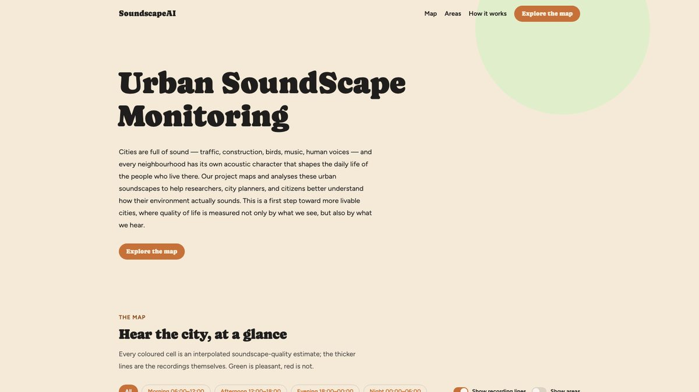

Demos
Interactive demos

SoundscapeAI — Urban Soundscape Monitoring
An interactive map of how Athens actually sounds. Crowdsourced recordings are analysed by our audio models and aggregated into a spatiotemporal view of acoustic quality and acoustic events, by area and by time of day. Built on the group’s work on urban soundscape quality recognition and sound event detection.